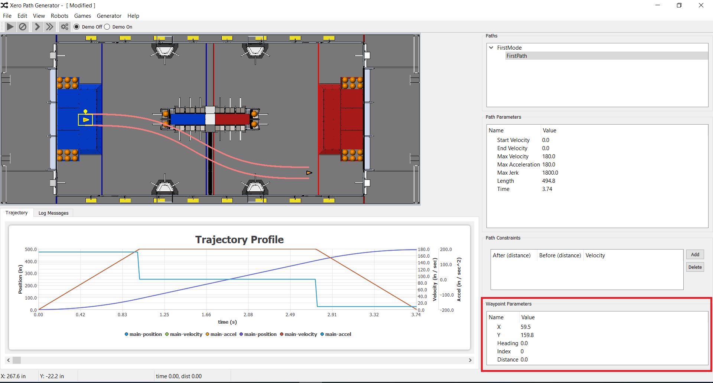

Waypoint Window

The waypoint window displays the properties of the current waypoint
if a waypoint is selected. This window displays the X and Y coordinates,
the heading, the index, and the distance along the path for the selected
waypoint. The X and Y coordinates as well as the heading can be edited
in this window.